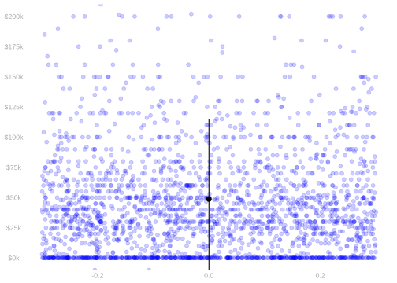
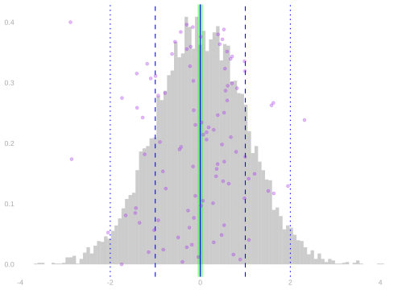
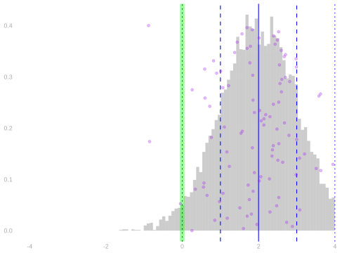

11 Probability Review: Conditional Expectations
A New Dataset
$$ \newcommand{X}{} \newcommand{Y}{}
$$
| income | education | county | |
|---|---|---|---|
| 1 | $55k | 13 | orange |
| 2 | $25k | 13 | LA |
| 3 | $44k | 16 | san joaquin |
| 4 | $22k | 14 | orange |
| ⋮ | |||
| 2271 | $150k | 16 | stanislaus |
- We’ll do the same thing we’ve been doing, but for non-binary outcomes.
- Using data from the Current Population Survey, we’ll estimate …
- the mean income in our population.
- the mean income among people in our population with 4-year degrees
- the difference in mean income between people with 4-year degrees and people without them.
- Our population will be the set of California residents
- between the ages of 25 and 35
- with at least an 8th-grade education
The locations shown on the map are made up. They’re not the actual locations of the people in the sample.
The survey includes some location information for some people, but as you can see in the table, not for everyone.
Imagining a Population


| income | education | county | |
|---|---|---|---|
| 1 | $22k | 18 | unknown |
| 2 | $0k | 16 | solano |
| 3 | $98k | 16 | LA |
| ⋮ | |||
| 5677500 | $116k | 18 | unknown |
| income | education | county | |
|---|---|---|---|
| 1 | $55k | 13 | orange |
| 2 | $25k | 13 | LA |
| 3 | $44k | 16 | san joaquin |
| ⋮ | |||
| 2271 | $150k | 16 | stanislaus |
- We don’t have much information about the people in our population. Except the ones in our sample.
- But, for the sake of visualization, I’ve made some up.
- We’ll put visualizations of this fake population on the left.
- Visualizations of the (real) sample will be on the right.
Sampling


- We’ll act as if our data were sampled, with replacement, from this population.
- On the left, I’ve illustrated the population.
- On the right, I’ve illustrated our sample.
- Our working assumption: each dot on the right was chosen, from those on the left, by rolling a big die.
- That’s not quite right, but we’ll stick with it throughout the semester.
Sample and Population Means


- One thing we often want to estimate is the mean of our population.
\[ \mu = \frac{1}{m}\sum_{j=1}^m y_j \]
- We’ll think of the mean in our sample as an estimate of it.
\[ \hat \mu = \frac{1}{n}\sum_{i=1}^n Y_i \]
- We have shown last time that this estimator is unbiased.
\[ \mathop{\mathrm{E}}[\hat \mu] = \mu \qfor \underset{\text{\color[RGB]{64,64,64}{population mean}}}{\mu = \mathop{\mathrm{E}}[Y_i] = \frac{1}{m}\sum_{j=1}^m y_j} \]
- We have almost calculated its standard deviation. Here it is.
\[ \mathop{\mathrm{sd}}[\hat \mu] = \frac{\sigma}{\sqrt{n}} \qfor \underset{\text{\color[RGB]{64,64,64}{population standard deviation}}}{\sigma=\sqrt{\mathop{\mathrm{\mathop{\mathrm{V}}}}[Y_i]}=\sqrt{\frac{1}{m}\sum_{j=1}^m (y_j - \mu)^2}} \]
- We did it in the special case of binary \(Y_i\) in our last lecture.
- We’ll generalize next time. It’s a one-line change.
Why Do We Care About Unbiasedness?


- Unbiasedness means that our sampling distribution is centered at our estimation target.
- On the left, we see the sampling distribution of an unbiased estimator.
- When it looks like that, we’re in good shape.
- On the right, we see one for an estimator with substantial bias.
- When it looks like that, we’re in trouble.
- You can see that a good number of our samples on the right are far off-target.
- Further away, e.g., than the width of the distribution.
- You can see this might cause problems with coverage.
- If we calibrate interval estimates to cover the estimator’s mean 95% of the time,
how often will they cover the thing we actually intend to estimate? - Give me a rough estimate for the picture on the right. Is it about 90%? 80%? 50%? 20%?
- We’ll see our first examples of biased estimators in this week’s homework.
- And we’ll have to start thinking about this relationship between bias and coverage.
Subsample and Subpopulation Means


- We’ll often be interested in the mean income in subpopulations, too.
- We’ll think about the subsample with \(X_i=x\) for some value \(x\).
- e.g. \(X_i=1\) for people with a 4-year degree and \(X_i=0\) for people without. \[ \mu(x) = \frac{1}{m_x}\sum_{j:x_j = x } y_j \quad \text{ where } \quad m_x = \sum_{j:x_j=x} 1. \]
- We’ll use the mean in the corresponding subsample to estimate it.
\[ \hat \mu(x) = \frac{1}{N_x}\sum_{i:X_i=x} Y_i \quad \text{ where } \quad N_x = \sum_{i:X_i=x} 1. \]
- If we want to know a difference of subpopulation means, as we often do …
- … we can estimate it using a difference of subsample means.
Are These Good Estimators?


- We want to know about bias, i.e. location of the sampling distribution relative to the estimation target.
- That’s where we’re headed today. We’ll show they’re unbiased.
- And we want to know about precision, i.e., how wide our calibrated intervals would be.
- We’ll get to this next time.
Random Variables and Conditioning
A lot of this is review.
To make this a nice cohesive read, I’ve included all the unconditional probability stuff we’ve covered so far and the new conditional stuff.
Observations as Random Variables


- The notation \(y_j\) refers to a number.
- It’s the income of the \(j\)th person in our population. That’s just some person.
- The notation \(Y_i\) refers to something else.
- It’s the income of the \(i\)th person we call in our survey. That’s not a person.
- That’s the result of a random process—the roll of a die.
- To summarize this result, we talk about the probability distribution of \(Y_i\).
Notation Conventions
- Random variables are written in uppercase: \(X\), \(Y\), \(Z\), etc. Constants are written in lowercase: \(x\), \(y\), \(z\), etc.
- We’ll use the same letter for a random variable and the value it takes on. \(x\) is a possible value of \(X\), \(y\) of \(Y\), etc.
- Estimators are also random variables, but instead of uppercase we use a hat: \(\hat\theta\),\(\hat \mu\), \(\hat \sigma\), etc.
- We’ll use the same letter for the estimator and what it’s meant to estimate.
- \(\hat \mu\) is an estimator of \(\mu\); \(\hat\theta\) is an estimator of \(\theta\).
- We’ll use \(\theta\) and \(\mu\) in different but ocassionally overlapping ways.
- \(\mu\) will be our population mean and \(\mu(x)\) the mean in the subpopulation with \(X=x\).
- \(\theta\) will be our estimation target.
- So far, it’s often been the population mean, so \(\theta=\mu\).
- Or a subpopulation mean, so \(\theta=\mu(x)\).
- Later in the semseter, it’ll tend to be something a bit more complicated.
Probability Distributions: The Binary Case
| income50k | income | education | county | |
|---|---|---|---|---|
| 1 | 0 | $22k | 18 | unknown |
| 2 | 0 | $0k | 16 | solano |
| 3 | 1 | $98k | 16 | LA |
| ⋮ | ||||
| 5677500 | 1 | $116k | 18 | unknown |
| roll | income50k | income | education | county | |
|---|---|---|---|---|---|
| 1 | 1017 | 1 | $55k | 13 | orange |
| 2 | 8004 | 0 | $25k | 13 | LA |
| 3 | 4775 | 0 | $44k | 16 | san joaquin |
| ⋮ | |||||
| 2271 | 12927 | 1 | $150k | 16 | stanislaus |
- When our outcomes are binary, it’s easy to describe this distribution.
- All we need to know is the probability that \(Y_i\) is 1. Why?
- To do that, we sum the probabilities of the rolls that result in it being one.
\[ P(Y_i = 1) = \sum_{j: y_j = 1} P(\text{roll}_i = j) = \sum_{j: y_j = 1} \frac{1}{m} \times y_j = \mu. \]
- This collapses out information about our random process that’s irrelevant to \(Y_i\).
- That is, it collapses the probability we roll each number in 1…m into our ‘weighted coin flip’.
Probability Distributions: The General Case
| income50k | income | education | county | |
|---|---|---|---|---|
| 1 | 0 | $22k | 18 | unknown |
| 2 | 0 | $0k | 16 | solano |
| 3 | 1 | $98k | 16 | LA |
| ⋮ | ||||
| 5677500 | 1 | $116k | 18 | unknown |
| roll | income50k | income | education | county | |
|---|---|---|---|---|---|
| 1 | 1017 | 1 | $55k | 13 | orange |
| 2 | 8004 | 0 | $25k | 13 | LA |
| 3 | 4775 | 0 | $44k | 16 | san joaquin |
| ⋮ | |||||
| 2271 | 12927 | 1 | $150k | 16 | stanislaus |
- When our outcomes are are nonbinary, it’s a bit more complicated.
- We need to know the probability that \(Y_i\) takes on each possible value.But we calculate it the same way.
- We sum the probabilities of the rolls that result in it taking on those values.
\[ P(Y_i = y) = \sum_{j: y_j = y} P(\text{roll}_i = j) \]
- We’re still collapsing out irrelevant information, but what we’re left with is more complicated.
- It’s a weighted die roll, with one face for each possible value of \(Y_i\).
- And If each person’s income is different, then there’s nothing to collapse out. Then, … \[ P(Y_i = y) = \begin{cases} \frac{1}{m} & \qqtext{for} y \in y_1 \ldots y_m \\ 0 & \qqtext{otherwise} \end{cases} \]
Expectations
| income50k | income | education | county | |
|---|---|---|---|---|
| 1 | 0 | $22k | 18 | unknown |
| 2 | 0 | $0k | 16 | solano |
| 3 | 1 | $98k | 16 | LA |
| ⋮ | ||||
| 5677500 | 1 | $116k | 18 | unknown |
| roll | income50k | income | education | county | |
|---|---|---|---|---|---|
| 1 | 1017 | 1 | $55k | 13 | orange |
| 2 | 8004 | 0 | $25k | 13 | LA |
| 3 | 4775 | 0 | $44k | 16 | san joaquin |
| ⋮ | |||||
| 2271 | 12927 | 1 | $150k | 16 | stanislaus |
- That said, we often don’t need to know the whole distribution.
- Often the only thing we care about is the expected value of \(Y_i\). Or some related quantity.
- The expected value of \(Y_i\) is the probability-weighted average of the values it can take on.
- What’s nice about this is that we can think of this in ‘uncollapsed’ terms.
- When we sample as usual, this is just the population mean.
- The collapsed form is, in a sense, just summing in a different order.
\[ \begin{aligned} \mathop{\mathrm{E}}[Y_i] = \sum_y P(Y_i = y) \times y = \sum_y \qty(\sum_{j: y_j = y} \frac{1}{m}) \times y = \frac{1}{m}\sum_y\sum_{j:y_j = y} y = \frac{1}{m}\sum_{j=1}^m y_j \end{aligned} \]
Expectations
| income50k | income | education | county | |
|---|---|---|---|---|
| 1 | 0 | $22k | 18 | unknown |
| 2 | 0 | $0k | 16 | solano |
| 3 | 1 | $98k | 16 | LA |
| ⋮ | ||||
| 5677500 | 1 | $116k | 18 | unknown |
| roll | income50k | income | education | county | |
|---|---|---|---|---|---|
| 1 | 1017 | 1 | $55k | 13 | orange |
| 2 | 8004 | 0 | $25k | 13 | LA |
| 3 | 4775 | 0 | $44k | 16 | san joaquin |
| ⋮ | |||||
| 2271 | 12927 | 1 | $150k | 16 | stanislaus |
- What’s nice about the binary case is, in fact, that it’s an expectation.
- When \(Y_i\) is binary, the probability it’s 1 is its expected value \(Y_i\).
\[ \begin{aligned} P(Y_i=1) = \sum_{j: y_j = 1} P(\text{roll}_i = j) &= \sum_{j:y_j=1} \frac{1}{m} \\ &= \sum_{j=1}^m \frac{1}{m} \times \begin{cases} 1 & \ \ \text{ if } y_j = 1 \\ 0 & \ \ \text{ otherwise} \\ \end{cases} \\ &= \sum_{j=1}^m \frac{1}{m} \times y_j = \mathop{\mathrm{E}}[Y_i]. \end{aligned} \]
- In fact, we like expectations so much that we often use them to work with probabilities.
\[ P(Z \in A) = \mathop{\mathrm{E}}[1_A(Z)] \qfor 1_A(z) = \begin{cases} 1 & \qqtext{ for } z \in A \\ 0 & \qqtext{ otherwise} \end{cases} \]
Independence


- Random variables are independent if …
- … in intuitive terms, knowing the value of one doesn’t tell us anything about the value of the other.
- … in mathematical terms, their joint probability distribution is the product of their individual marginals ones.
\[ P(Y_1 ... Y_k = y_1 \ldots y_k) = P(Y_1=y_1) \times \ldots \times P(Y_k=y_k). \]
- That’s what happens when the randomness in each \(Y_i\) comes from a different roll of the die.
- And since that’s how we’re doing our sampling in the Current Population Survey, it’ll be true in our sample.
- Because we draw each of our observations the same way, they also have the same probability distribution.
- We say they’re independent and indentically distributed.
- At least, that’s what we’re pretending when we analyze CPS data in this class. Reality is more complicated.
Conditioning


- Conditioning is, in effect, a way of thinking about sampling as a two-stage process.
- First, we choose the color of our dot, i.e., the value of \(X_i\), according to it frequency in the population.
- Then, we choose a specific one of those dots, i.e. \(J_i\), from those with that color—with equal probability.
- Because this is just a way of thinking, each person still gets chosen with probability \(1/m\). \[ P(J_i=j) = \begin{cases} \frac{m_{green}}{m} \ \ \ \ \ \times \frac{1}{m_{green}} \ \ \ \ \ =\ \frac{1}{m} & \text{if the $j$th dot is green ($x_j=1$) } \\ \frac{m-m_{green}}{m} \times \frac{1}{m-m_{green}} \ = \ \frac{1}{m} & \text{otherwise} \end{cases} \]
Conditioning


- The Conditional Probability of \(Y_i\) is the probability resulting from the second stage.
- It’s a function of the result of the first.
- \(P(Y_i=y \mid X_i=1)\) is the probability distribution of \(Y_i\) when we’re rolling the ‘green die’.
- \(P(Y_i=y \mid X_i=0)\) is the probability distribution of \(Y_i\) when we’re rolling the ‘red die’.
- And the Conditional Expectation of \(Y_i\) is the ‘second stage expected value’ in the same sense.
- \(\mathop{\mathrm{E}}[Y_i \mid X_i=1]\) is the expected value of \(Y_i\) when we’re rolling the ‘green die’.
- That is, the mean value \(\mu(1)\) of \(y_j\) in the subpopulation drawn as little green dots.
- \(\mathop{\mathrm{E}}[Y_i \mid X_i=0]\) is the expected value of \(Y_i\) when we’re rolling the ‘red die’.
- That is, the mean value \(\mu(0)\) of \(y_j\) in the subpopulation drawn as little red dots.
Working with Expectations
Conditioning


The law of iterated expectations
\[ E \{ E( Y \mid X ) \} \quad \text{ for any random variables $X, Y$} \]
To calculate the mean of \(Y\), we can average within subpopulations, then across subpopulations.
Irrelevance of independent conditioning variables
\[ E( Y \mid X, X' ) = E( Y \mid X ) \quad \text{ when $X'$ is independent of $X,Y$ } \]
If \(X'\) is unrelated to \(X\) and \(Y\), holding it constant doesn’t affect the relationship between them.
Linearity of Expectations


\[ \begin{aligned} E ( a Y + b Z ) &= E (aY) + E (bZ) \\ &= aE(Y) + bE(Z) \\ & \text{ for random variables $Y, Z$ and numbers $a,b$ } \end{aligned} \]
- There are two things going on here.
- To average a sum of two things, we can take two averages and sum.
- To average a constant times a random variable, we multiply the random variable’s average by the constant.
- In other words, we can distribute expectations and can pull constants out of them.
Proof
- In essence, it comes down to the fact that all we’re doing is summing.
- Expectations are probability-weighted sums.
- And we’re looking at the expectation of a sum.
- And we can change the order we sum in without changing what we get.
\[ \small{ \begin{aligned} \mathop{\mathrm{E}}\qty( a Y + b Z ) &= \sum_{y}\sum_z (a y + b z) \ P(Y=y, Z=z) && \text{ by definition of expectation} \\ &= \sum_{y}\sum_z a y \ P(Y=y, Z=z) + \sum_{z}\sum_y b z \ P(Y=y, Z=z) && \text{changing the order in which we sum} \\ &= \sum_{y} a y \ \sum_z P(Y=y,Z=z) + \sum_{z} b z \ \sum_y P(Y=y,Z=z) && \text{pulling constants out of the inner sums} \\ &= \sum_{y} a y \ P(Y=y) + \sum_{z} b z \ P(Z=z) && \text{summing to get marginal probabilities from our joint } \\ &= a\sum_{y} y \ P(Y=y) + b\sum_{z} z \ P(Z=z) && \text{ pulling constants out of the remaining sum } \\ &= a\mathop{\mathrm{E}}Y + b \mathop{\mathrm{E}}Z && \text{by definition} \end{aligned} } \]
Linearity of Conditional Expectations


\[ \begin{aligned} E\{ a(X) Y + b(X) Z \mid X \} &= E\{a(X)Y \mid X\} + E\{ b(X)Z \mid X\} \\ &= a(X)E(Y \mid X) + b(X)E(Z \mid X) \end{aligned} \]
- This is like linearity of expectations, but with a twist.
- When we condition on \(X\), we’re working with subpopulations in which \(X\) is constant.
- This means we can act as if functions of \(X\) are constants.
- So we can pull them out of expectations that are conditional on \(X\).
It’s important to distinguish between two things

- The conditional expectation function \(\mu(x)=E[Y \mid X=x]\).
- \(\mu\) is a function; evaluated at \(x\), it’s a number. It’s not random.
- It’s the mean of the subpopulation of people with \(X=x\).
- The conditional expectation \(\mu(X)=E[Y \mid X]\).
- \(\mu(X)\) is the mean of a random subpopulation of people.
- It’s the conditional expectation function evaluated at the random variable \(X\).
- This is the sort of thing that shows up when we use the law of iterated expectations.
Check Your Understanding

- Suppose we sample a point \((X, Y)\) uniformly at random from the population of 6 points above.
- What is the conditional expectation function \(\mu(x)\) at \(x=0\) and \(x=1\)?
- What is the conditional expectation \(\mu(X)\)?
- \(\mu(0)=1\) and \(\mu(1)=1.25\)
- \(\mu(X)\) is a random variable taking on these two values. \[ \mu(X) = \begin{cases} 1 & \text{ when } X=0 \\ 1.25 & \text{ when } X=1 \end{cases} \]
The Indicator Trick

- Suppose we sample a point \((X, Y)\) uniformly at random from the population of 6 points above.
- What is \(1_{=1}(X)\mu(X)\)?
\(1_{=1}(X)\mu(X)\) is a random variable taking on these two values. \[ 1_{=1}(X)\mu(X) = \begin{cases} 0 \times \mu(0) = 0 \times 1 & \text{ when } X=0 \\ 1 \times \mu(1) = 1 \times 1.25 & \text{ when } X=1 \end{cases} \]
We can write it equivalently as \(1_{=1}(X)\mu(1)\) because either …
- \(X=0\), so \(1_{=1}(X)\mu(X) = 1_{=1}(X)\mu(1) = 0\)
- \(X=1\), so \(1_{=1}(X)\mu(X) = 1_{=1}(X)\mu(1) =\mu(1)\)
This comes up a lot working with subsample means.
We’ll swap \(1_{=1}(X)\mu(X)\) for \(1_{=1}(X)\mu(1)\) often, referring to the indicator trick.
A More Realistic Example

Let’s think about a random person drawn from this population
- \(Y\) is their income
- \(X\) is an indicator for having a four-year degree.
Suppose the subpopulation means are 70k for people with degrees and 30k for people without.
And that 4/10 of our population has degrees.
Q. What is \(E(Y \mid X)\)? And what is \(E(Y)\)?
- \(E(Y \mid X)\) is a random variable that is either 70k or 30k
- It’s 70k with probability 4/10, when \(X=1\).
- It’s 30k with probability 6/10, when \(X=0\).
- \(\mathop{\mathrm{E}}(Y)\) is its expectation. A number.
- We’ll calculate it using iterated expectations.
\[ \begin{aligned} E\{ E( Y \mid X ) \} &= E(Y|X=1)P(X=1) + E(Y|X=0)P(X=0) \\ &= 70k \cdot 4/10 + 30k \cdot 6/10 = 28k + 18k = 46k \end{aligned} \]
Review Exercise 1

- Suppose we sample a point \((X, Y)\) in the plot above uniformly at random.
- Ignore the jitter; just think of the points as being at \(X=0\) and \(X=1\).
- What is \(\mathop{\mathrm{E}}\{ \mu(X) \}\)?
- There are two ways of thinking about calculating \(\mathop{\mathrm{E}}\{\mu(X)\}\).
- We just calculate the expectation of it, thinking of it as an arbitrary random variable.
- We use the law of iterated expectations to show it’s the unconditional mean of \(Y\).
\[ \small{ \begin{aligned} \mathop{\mathrm{E}}\qty{ \mu(X) } &= \frac{1}{2}\mu(0) + \frac{1}{2}\mu(1)= \frac{1}{2} \cdot 1 + \frac{1}{2} \cdot 1.25 = 1.125 && \text{ the first way } \\ \mathop{\mathrm{E}}\qty{ \mu(X) } &= \mathop{\mathrm{E}}\qty{\mathop{\mathrm{E}}\qty(Y \mid X)} = \mathop{\mathrm{E}}\qty{Y} = \frac{1}{6} \cdot 0.75 + \frac{1}{6} \cdot 1 + \ldots && \text{ the second way } \end{aligned} } \]
Review Exercise 2

- Suppose we sample a point \((X, Y)\) in the plot above uniformly at random.
- Ignore the jitter; just think of the points as being at \(X=0\) and \(X=1\).
- What is \(\mathop{\mathrm{E}}\{ 1_{=1}(X)\mu(X) \}/\mathop{\mathrm{E}}(1_{=1}(X))\)?
- It’s \(\mu(1)\). \(1_{=1}(X)\mu(X)=1_{=1}(X)\mu(1)\), so … \[ \begin{aligned} \mathop{\mathrm{E}}\{ 1_{=1}(X)\mu(X) \} &= \mathop{\mathrm{E}}\{ 1_{=1}(X)\mu(1) \} \\ &= \mu(1) \ \mathop{\mathrm{E}}\{ 1_{=1}(X) \} \\ \end{aligned} \]
Review Exercise 3

- Suppose we sample a point \((X, Y)\) in the plot above uniformly at random.
- Ignore the jitter; just think of the points as being at \(X=0\) and \(X=1\).
- What is \(\mathop{\mathrm{E}}\{ 1_{=0}(X)\mu(X) \}/\mathop{\mathrm{E}}(1_{=0}(X))\)?
- It’s \(\mu(0)\). It’s analogous to the last one. \(1_{=0}(X)\mu(X)=1_{=0}(X)\mu(0)\), so … \[ \begin{aligned} \mathop{\mathrm{E}}\{ 1_{=0}(X)\mu(X) \} &= \mathop{\mathrm{E}}\{ 1_{=0}(X)\mu(0) \} \\ &= \mu(0) \ \mathop{\mathrm{E}}\{ 1_{=0}(X) \} \\ \end{aligned} \]
Unbiasedness of Means
The Sample Mean


Claim. The sample mean is an unbiased estimator of the population mean. \[ \mathop{\mathrm{E}}[\hat\mu] = \mu \]
\[ \begin{aligned} \mathop{\mathrm{E}}\qty[\frac1n\sum_{i=1}^n Y_i] &= \frac1n\sum_{i=1}^n \mathop{\mathrm{E}}[Y_i] && \text{ via linearity } \\ &= \frac1n\sum_{i=1}^n \mu && \text{ via equal-probability sampling } \\ &= \frac1n \times n \times \mu = \mu. \end{aligned} \]
A Subsample Mean
Claim. The subsample mean is unbiased for the subpopulation mean. \[ \mathop{\mathrm{E}}[\hat\mu(1)] = \mu(1) \]
- Use the Law of Iterated Expectations, conditioning on \(X_1 \ldots X_n\).
- Then the linearity of conditional expectations to push the conditional expectation into the sum.
- Then irrelevance of independent conditioning variables to write things in terms of the random variable \(\mu(X_i)\)
- Then the indicator trick. What’s \(1_{=1}(X_i) \mu(X_i)\)? How is it related to \(\mu(1)\)?
\[ \hat\mu(1) = \frac{\sum_{i:X_i=1} Y_i}{\sum_{i:X_i=1} 1} = \frac{\sum_{i=1}^{n} 1_{=1}(X_i) Y_{i}}{\sum_{i=1}^{n} 1_{=1}(X_i)} \]
- It’s easy to make mistakes using linearity of expectations when we’re summing over a subsample.
- Can we or can we not ‘push’ or ‘pull’ and expectation through a sum …
- … when the terms in that sum depend on the value of a random variable?
- To make this a lot more obvious, we can rewrite these as sums over the whole sample.
- Instead of ‘excluding’ the terms where \(X_i=0\), we ‘make them zero’ by multiplying in the indicator \(1_{=1}(X_i)\).
- Then, of course we can distribute expectations through the sum.
- The question becomes whether we can ‘pull out’ the indicator.
- And we have a rule for that. We can do it if we’re conditioning on \(X_i\).
- When we write a subsample mean, we can do that …
- in the numerator, the sum of observations in the subsample.
- in the denominator, the number of those terms, which is a sum of ones over the subsample.
\[ \small{ \begin{aligned} \mathop{\mathrm{E}}[\hat\mu(1)] &=\mathop{\mathrm{E}}\qty[ \mathop{\mathrm{E}}\qty{\frac{\sum_{i:X_i=1} Y_{i}}{\sum_{i:X_i=1} 1} \mid X_1 \ldots X_n}] \\ &=\mathop{\mathrm{E}}\qty[ \mathop{\mathrm{E}}\qty{\frac{\sum_{i=1}^{n} 1_{=1}(X_i) Y_{i}}{\sum_{i=1}^{n} 1_{=1}(X_i)} \mid X_1 \ldots X_n}] \\ &=\mathop{\mathrm{E}}\qty[\frac{\sum_{i=1}^{n} 1_{=1}(X_i) \mathop{\mathrm{E}}\qty{ Y_{i} \mid X_i}}{\sum_{i=1}^{n}1_{=1}(X_i)}] \\ &=\mathop{\mathrm{E}}\qty[\frac{\sum_{i=1}^{n}1_{=1}(X_i) \mu(X_i)}{\sum_{i=1}^{n}1_{=1}(X_i)}] \\ &=\mathop{\mathrm{E}}\qty[\frac{\sum_{i=1}^{n}1_{=1}(X_i) \mu(1)}{\sum_{i=1}^{n}1_{=1}(X_{i})}] \\ &=\mathop{\mathrm{E}}\qty[\frac{\mu(1)\sum_{i=1}^{n} 1_{=1}(X_i) }{\sum_{i=1}^{n}1_{=1}(X_{i})}] \\ &=\mu(1) \ \mathop{\mathrm{E}}\qty[\frac{\sum_{i=1}^{n} 1_{=1}(X_i) }{\sum_{i=1}^{n}1_{=1}(X_{i})}] = \mu(1) \mathop{\mathrm{E}}[1] = \mu(1). \end{aligned} } \]
Differences in Subsample Means
Claim. The difference in subsample means is unbiased for the difference in subpopulation means.
\[ \mathop{\mathrm{E}}[\hat\mu(1) - \hat\mu(0)] = \mu(1) - \mu(0) \]
This follows from the linearity of expectations and unbiasedness of the subsample means.
\[ \mathop{\mathrm{E}}[\hat\mu(1) - \hat\mu(0)] = \mathop{\mathrm{E}}[\hat\mu(1)] - \mathop{\mathrm{E}}[\hat\mu(0)] = \mu(1) - \mu(0) \]
Summary


- Subsample means are unbiased estimators of the corresponding population means.
- And, expectation being linear, this extends to differences in subsample means.
- Now that we’ve worked out that the location is good, it’s time to talk about spread.
- That’s what we’ll do next time.